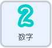
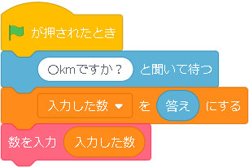
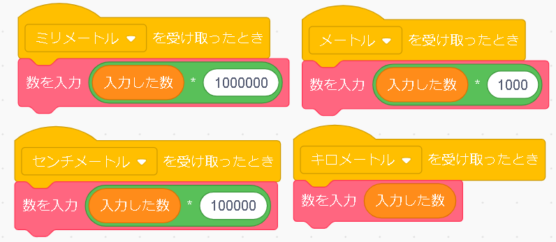
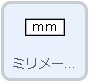
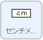
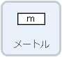
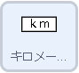
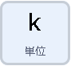
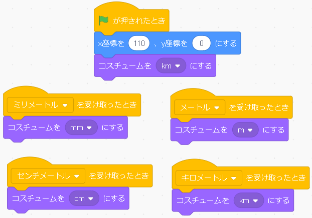

いろいろな単位変換


このプログラムは、最初に一番大きな単位（キロ）で数字を記入し、その数字から、他の単位に変換するとどうなるかを、スイッチを押すことで見ることができるものです。少し難しいですが、長さだけじゃなくて、重さや容量といった応用が利きます。今回の解説では、長さの単位変換です。
プログラムするスプライト |
|
|  |
最初に緑の旗をクリックしたことをきっかけに、何キロか聞き、「入力した数」という名前のついた変数に入力された答えを入れます。つぎに、入力した数字を画面に表示します。表示の方法は、このスプライトに0～9のコスチュームを用意し、それらを入力された数字とおなじコスチュームのスタンプおすというプログラムをします。このプログラムは、複雑で難しいです。このプログラムが[定義]とかかれたグロックから始まるブロックの塊です。これをそのまま使うようにします。 では、この定義以下のプログラムをどのように使用するかというと、定義に書かれている[数を入力]と同じように書かれたピンクのブロックを使います。長いややこしいプログラムをこれ一つで、使うことができます。[数を入力]の横に変数や数字を入れるところがありますが、これは表示したい数字を入力するものです。これで、単位を変換させるための数字を表示できました。 |
|  |
その下は、［〇〇を受け取ったとき］と書かれたブロックが四つあります。これは、どこかのプログラムで内で、［〇〇を送って待つ］というブロックが実行されたことをきっかけに、〇〇を受け取るプログラムが実行されます。例えば、［ミリメートルを送って待つ］というプログラムが実行されたときは、［ミリメートルを受け取ったとき］から始まるプログラムが実行されます。 では、［〇〇を送って待つ］をきっかけに何が実行されるのかというと、先ほどと同じ数を表示するようになっています。少し違うのは、入力された数字を単位変換のために計算をしたものを表示させるようにします。それでは、それぞれのこれら四つを実行するきっかけとなる［〇〇を送って待つ］は、どこにあるのかというと、ボタンを押したときに単位変換をしてほしいので、それぞれのボタンのスプライトでブロックを使用する必要があります。 |
プログラムするスプライト    |
|
 |
それぞれのボタンのプログラムです。旗が押された後は、それぞれの位置につくようにプログラムされています。そして、このスプライトが押されたら、それぞれの単位の名前が付いたものを送っていますね。ボタンを押したら数字を変えたいので、数字のスプライトに、ボタン押されたで～数をかえてな～と連絡を取っているのです。 これで数字を変えることはできたので、最後に単位を変換させましょう。 |
プログラムするスプライト |
|
|  |
数字が変わったタイミングで一緒に変えたいので、先ほどの［〇〇を受け取ったとき］を使います。 あらかじめ、それぞれの単位のコスチュームを用意します。そして、押されたボタンの単位のコスチュームに変化させます。 |